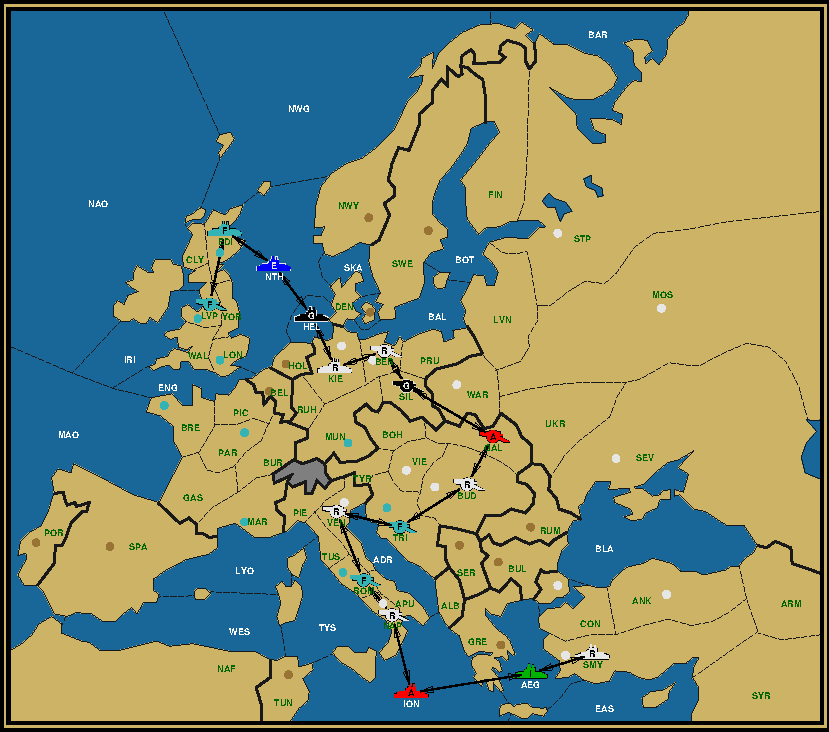
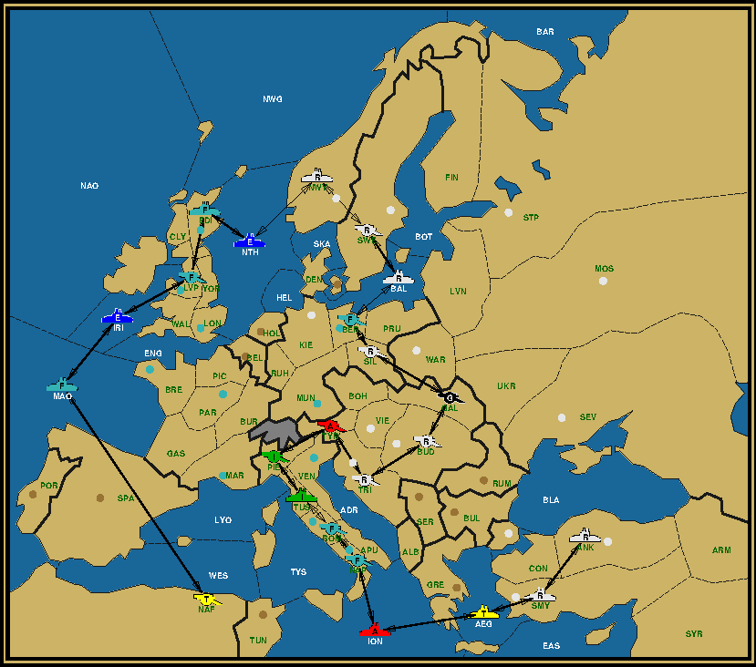
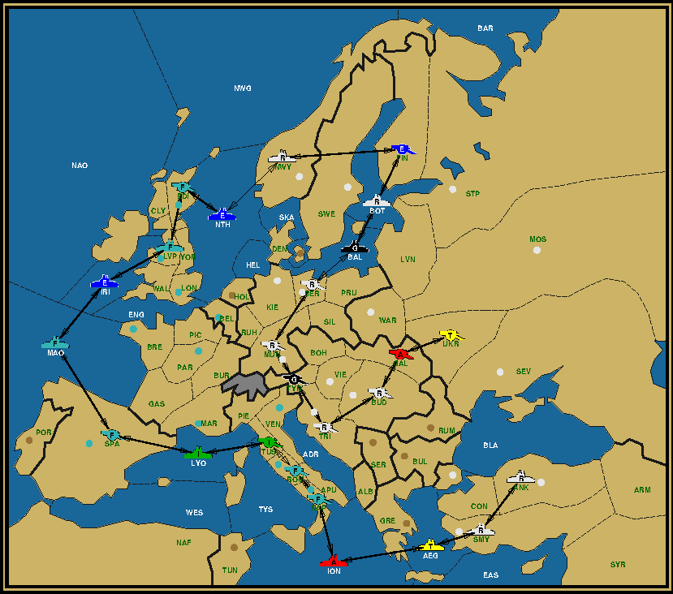
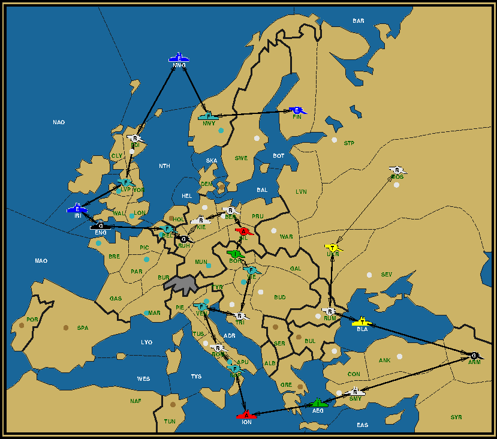

'I say, Holmes!' said I, as my friend, rising from the dining table that we had shared, started
back toward the gaming hall of the Calhamer Club rather than to the cloak closet where our
topcoats were checked. 'Wherever are you going? Are we not yet returning to Baker Street?'
I rushed to catch up with the great detective, whereupon he answered me, 'I certainly did not
intend to eavesdrop, Watson, but even you could not possibly have failed to overhear the
discussions of the gentlemen who recently arrived to dine at the table next to ours. I simply
must have a look at their game board before we depart.'
Knowing that my afternoon medical appointments had all been cleared, I was agreeable to
this turn of events, for who indeed could but enjoy more time spent contemplating the great
game of Diplomacy? I had to admit, however, that I did not know what had sparked Holmes's
curiosity. 'What-ho, Holmes? Whatever did the gentlemen say that interests you so?'
'Honestly, Watson, your lack of awareness surprises me. The gentlemen were quite
boisterous in their talk, celebrating a feat that they had accomplished on the Diplomacy board.
Why, did you not overhear any of the details of their game as they discussed -- and, indeed,
toasted! -- them?'
I did, I suppose, take some notice of the men to whom Holmes referred, but I had not paid
any attention, as my friend had, to the substance of their conversations.
As we walked through the building, Holmes continued to discuss what he had overheard.
'They were quite self-congratulatory, Watson! 'We did it!' they cried many times, raising their
glasses. 'I knew it could be done!' one of them said.'
'What was it that they did, Holmes?' I asked.
'That, Doctor, is precisely what I wished to know, and thankfully, their discussions provided an
answer. Their first point of pride was that they had accomplished five eliminations in the first
two game-years. Yes, Watson, five! -- it seems that only two of the players (I know not which
powers they played, but we shall soon see!) have survived by the end of the Fall 1902
Movement Phase. When we reach the gaming hall, we shall find their game in its position
awaiting Adjustments for 1902. No new pieces have yet been built or eliminated pieces removed.'
'Even more compelling, though, Watson, was a second accomplishment, which is likely to
leave the Club a bit poorer in its stock of whisky, for all the celebrating the gentlemen are
doing over it. My understanding, from what they were saying, is that these players have
apparently left the pieces on their board arranged to form a chain, such that (apart, I presume,
from the two pieces at either end of this chain), every piece sits in a space that is adjacent
(over land or sea) to exactly two other units! This means, Watson, that there is only one
pathway from one end of the chain to the other! Furthermore, the men were marveled by the
number of units they had on the map in such a position! All in all, this should make for an
interesting position to behold, indeed!'
I had to agree. What Holmes described did seem to be most interesting!
II
When Holmes and I reached the gaming hall, we saw a great many men (and all-too-few
women) in discussions throughout the room, huddled in twos and threes and in a few cases
greater numbers, scribbling their orders and fighting the clock. Ah, the great game! It did not
take too much time for us to match each group of players to a particular table and Diplomacy
board, and to our surprise we saw no other table set with a board, waiting for the seven diners
to return from their break.
Holmes, perplexed, sought out the room-attendant, a fine and able servant to the Club (in my
experience) called Fitchett. Finding him, Holmes explained the situation: 'My good man, it
seems that there is a board missing; seven gentlemen have just sat for drinks and supper in
the dining room, where they are discussing the incomplete game they are playing. However,
Dr Watson and I see here that all of the games in the hall are manned ably. Have you an
explanation for this?'
Fitchett was aghast, for immediately he knew what had happened. With an obvious fear for
his livelihood, he quickly explained, 'Oh, dear, Mr Holmes! You must be referring to the game
that I have only now just cleared from this very table! I was quite confident that the game
must have been completed! If somehow, as you say, it has rather not been, then we are sure
to have trouble! I know the men of whom you speak, and more than one of them have already
lodged complaints -- many of them quite frivolous, if you ask me -- against the service staff
here at the Club. If they return from dining to find that their game has been cleared
prematurely, I honestly do not know what will become of me!
'You see, sirs,' Fitchett continued, 'I heard the gentlemen remark, on leaving the table, that
only two of them had survived, so it seemed quite obvious to me that either a seventeen-
seventeen centre draw had been agreed upon, or else (the only other possibility!) one of the
two men had acquired eighteen or more centres and earned himself a victory. How could I
have been mistaken?'
Holmes, shaking his head, stated slowly, 'Ah, this is quite a sad situation. Even ignoring the
possibility that two players who hold seventeen centres apiece may choose to play on rather
than to agree to share a draw, you have overlooked the third possible situation, and the one in
which their game certainly finds itself. As I told the good doctor, the players made it known
that their game has only but reached the conclusion of the Fall 1902 Movement phase. As
such, it is of course quite impossible for any power to control more than sixteen centres. You
have most definitely erred in clearing the game-table, I am afraid.'
I thereupon quickly summarized the achievement that the seven diners were celebrating,
explaining that not only had they (as he already knew) eliminated five of their number from the
game, but that they had seemingly left all of the pieces in an unbroken single-file chain on the
board.
'Oh dear!' cried Fitchett again. 'What can possibly be done?'
'Why, simply restore the game board and pieces to their positions,' I helpfully offered, 'before
the men return to the hall!'
'Would that it were possible, Dr Watson, but I am certain that I could not possibly remember
the exact positions of all the pieces on the board. I simply swept them en masse into the box
and paid their positions no attention.' Fitchett was resigned to an unhappy conclusion to this
episode.
'Were there papers -- orders or notes -- of any sort on the table?' asked Holmes.
'I am sorry to say that there were not, sir,' came the sad reply.
Holmes was not dissuaded. 'All hope may not yet be lost, Fitchett', said he. 'It is possible that
we may be able to suitably reconstruct the board position while the men are still absent.'
'How would you propose to do this, Holmes?' I asked, incredulous. 'Certainly what little we
know of the game is not sufficient to allow any hope of success in such a task!' I asked.
'In that, Doctor, you are correct. We may be able to begin an effort to restore the men's board
position, but we will certainly need some further assistance to fully succeed in doing so.
Fitchett, my good man, would you be willing to provide the assistance that we will require?'
Trying to allow himself some hope, the room-attendant quickly answered. 'Certainly, Mr
Holmes! Of course I would do anything at all to help! Simply let me know what you have in
mind and I shall exert myself wholeheartedly, and give my best efforts to any assignment!'
Holmes addressed him: 'As Dr Watson said, we do not currently possess enough information
to be sure to properly position the pieces that must be on the board to allow the gentlemen to
play the next phase of their game. However, it may be that the players themselves can
provide us with the extra details that are needed. What I propose, Fitchett, is that you --
perhaps with the assistance of other members of the service staff -- visit yourselves upon the
gentlemen in the dining room and record any toasts that they may make and any other facts
that they may give out in their discussions about the game in question. Having done so, you
would then bring these pieces of information to Dr Watson and me here in the gaming hall as
quickly as possible, where we shall see what can be done with them.'
After a short and meaningful pause, Holmes added, 'To hope to secure ample time for the
chore that I envision lies ahead for the doctor and me, I might also strongly suggest that the
Club may wish to extend the seven gentlemen a generous supply of gratuitous libations, such
that their conversation, and time spent in the dining room, might be sufficiently lengthened.'
'Drinks on the house and ears at the ready!' cried Fitchett, with some excitement. Having thus
accepted the task set for him, he quickly found a fellow room-attendant, and the two began to
make plans for this intelligence-gathering mission.
I turned to Holmes. 'I rather doubt the success of this tactic, Holmes, but I suppose it is worth
the attempt. Fitchett is a good man and I would hate to see him punished for an
understandable mistake. As for us, Holmes, shall we, too, repair to the dining room for a drink
until the first bit of additional information is received?'
'No indeed, Watson! You and I can be much more useful here, beginning to position pieces on
the board and familiarizing ourselves with the difficulties that the players encountered and
overcame,' said my friend, as he pulled a Diplomacy set from the shelves and set it on the
empty table.
Laying out the map-board, he slowly and thoughtfully began to position pieces upon it, saying,
'Let us see, Watson, how well we can do with only the information that we currently possess.
This should give us a starting point that we can further refine when additional details
concerning the actual game reach us.'
Sherlock Holmes has assigned himself (and his physician companion)
the task of constructing a position, achievable by the end of the Fall 1902 Movement
Phase, that has five of the seven powers eliminated, and that has every piece on the
board left in a single-file chain. Try your hand at it now before continuing the story.
...and when you are ready to continue,
click here....
III
My friend Sherlock Holmes and I were bent over the Diplomacy set, alone at a table in the
crowded gaming hall of the Calhamer Club, considering our mission.
Toying with the pieces, Holmes idly stated arcane requirements concerning the task that we
faced, facts with which I was certainly unfamiliar but which Holmes believed were patently
obvious to even the most novice Diplomacy player. For example, he let out (expecting me to
have the selfsame sure knowledge of this point that he had) that only six specific pairs of
powers can possibly survive 1902 alone. Knowing his, he was able to rule out any possibility
that, for example, France and Germany together were the survivors. In fact, Holmes knew
with absolute certainty the identity of two of the powers that were undoubtedly eliminated
during 1902. All of this knowledge proved useful to him, for my friend used it to concentrate
his efforts on the best way to eliminate those particular players while leaving pieces
positioned to best form a “chain” on the board.
As he spoke, Holmes convinced himself (and me, through explanation) that the achievement
which we were trying to reproduce was all but impossible to accomplish for any but one
particular pair of surviving powers.
'The numbers speak for themselves. There are twenty-two home centers. Evidently all of the
home centers of the five eliminated powers, between fifteen and sixteen, need to be captured.
At most six can be captured the first year, which is less than half, since even Russia cannot
capture more than three.
It follows then that the conquering powers need to be able to build more units and use them
to capture other nearby centers in the second year. In other words, between nine and ten home
centers should be within a single year distance from the conquering powers' home centers.'
I considered this for a long moment, evaluating all the home centers that the various power pairs
could capture in a single year without getting into each other's way. 'Well, there is really only
one choice, is there?'
I pointed out the most likely candidate and Sherlock Holmes nodded. 'But does that not contradict
what you said before, that there are several pairs that could eliminate the five other powers?'
I asked. 'How can they accomplish this when they do not fulfill your criterion?'
'By way of convoy, of course. But the criterion is still a good one,' said Holmes. 'Remember that
the units must line up in a chain. For that it's best to choose a pair which can reach all points
of interest swiftly, without tying up too many units. I have no doubt that whoever invented this
challenge must have considered this.'
With this established, my hopes for our success rose accordingly, and we began our task,
positioning and repositioning Diplomacy units, discussing our options, and occasionally
disagreeing on what should next be done (as ever, I found myself proven to be in the wrong in
all such disagreements).
Still convinced that you have the proper pair? Now is the time to
reconsider.
...and when you are ready to continue,
click here....
I feel it incumbent upon me to put in here that while I claim to have assisted Holmes, truly it
was his brain working against the map-board; my participation was more with my eyes, my
ears, and my hands than with my intellect. My friend worked diligently, and made slow
progress; after twenty minutes, I was truly overjoyed as I watched him position the final pieces
in a 16-unit chain.
 Chain 16, After Fall 1902 Need seasons? Read until the end…
Chain 16, After Fall 1902 Click the dots for the complete history in a separate window… Season:
Holmes then lit his pipe and began to consider the accomplishment. I was delighted with it,
but Holmes was less so. 'A decent-enough first attempt, I suppose, Watson,' said he, 'but with
our focus on capturing home centers quickly, we have missed several opportunities to extend our
“chain”. I feel certain that this position cannot be that which the players are celebrating.'
'What if we try to keep those units around that had been dislodged and work them into our
chain?' I suggested. 'For example the Italian army dislodged in the last season could be better
off surviving in Tuscany, so that the chain runs through Rome, Tuscany, Venice and so on.'
'I agree as to the principle, but not the example', Holmes replied immediately. 'Do you not
remember that any unit in the chain can be adjacent to no more than two other units? As Rome
is already adjacent to Venice, it is not allowed to add a unit in Tuscany without relocating
one of the original units.'
'You mean something like replacing army Rome with a fleet in the Tyrrhenian Sea?' I asked before
catching myself. 'Ah, but then we would also need to remove army Naples, as that province is both
adjacent to the Tyrrhenian and the Ionian Sea.'
Holmes shook his head. 'Neither Rome nor Naples can be captured in the first year, hence both must
by necessity be part of the chain. If you want to alter the chain at this point, it should be Venice
that should go.'
Try it for yourself. Extend the chain by reducing the number of dislodged units
and building a few extra.
...and when you are ready to continue,
click here....
IV
Bending the chain around Venice proved to have some further consequences that rippled across the board.
But after some effort we came up with a chain that was already considerably longer.
Chain 20, After Fall 1902 Need seasons? Read until the end…
Chain 20, After Fall 1902 Click the dots for the complete history in a separate window… Season:
Taking a step back, I peered at the board. 'Twenty units, a nice round number. But it bothers
me that there's still one army that needed to be dislodged, rather than maintaining it
somewhere on the board to extend our chain by one additional unit.'
Holmes tucked on his pipe before responding. 'I suggest we build up both conquering powers to
their full complement to which they are entitled after the first year. That should allow us to
extend the chain some more, which could give us just enough elasticity to insert the missing army.'
Is Holmes' hunch correct? Where should the missing army appear?
...and when you are ready to continue,
click here....
 Chain 23, After Fall 1902 Need seasons? Read until the end…
Chain 23, After Fall 1902 Click the dots for the complete history in a separate window… Season:
It didn't take him long to prove his own hypothesis. But it was nonetheless a delightful surprise
to see the Turkish army appear at the French end of the chain, far away from his homeland where I
would have expected it to appear.
'This must be it, right Holmes? Mr. Fitchet will be so pleased. It all fits so tight together. The
Russian fleets at one end force the Turkish army to the other side of the board, securely anchoring
both ends of the chain. No dislodgements and a maximum number of builds means we took it as far as
it could go. All powers are represented by at least one unit in the chain, so that none of the men
feel left out. On top of that only units were built that matched in location and type with the
original units at the start of the game. And with twenty-three there are more units on the board
than at the start of the game. What more is there to accomplish?'
My friend was less convinced. 'Equal representation perhaps? In each attempt so far there was one
power that was reduced to a single unit after losing two home centers in the first year, first
Turkey, now Germany. But is that really a sine qua non? Could not army Moscow move elsewhere
and stay out of any home center?'
I began to argue this point, as a chain running through Berlin and Kiel would be shorter than
one moving North to Norway. But Holmes waved my argument away, insisting that the board still
had enough room to allow for far longer chains.
It was at this time when the first additional bits of information came back from the dining room.
Fitchett quickly approached us, saying, 'Mr Holmes! Dr Watson! I do not know whether what I
have thus far managed to overhear is important or not, but I left Crenshaw at the dining table
to continue supplying the men with cocktails in order that I could rush this information to you. I
only hope that it will prove useful!'
'Pray tell, man! What have you learned?' asked Holmes.
Fitchett continued: 'The men raised a toast to the fact that all seven of the Great Powers still
had at least one army and at least one fleet on the board at the time they left their game
table.'
I myself did not immediately grasp the importance of this fact, but Holmes was quite happy
with it. 'Indeed so?' he asked. 'Well, this changes things, Watson. This fact tells us much that
we can use to correct ourselves and improve our position in order that it may become more
like that contrived by the men in the dining room.'
I stopped him. 'Is that so, Holmes?'
'Quite so, Watson. Apart from knowing that Germany must still have an extra piece after the
first year, what is more important is that we now know that the English Army must also still be
on the board! It could not have been removed in Winter 1901!'
Continuing, he added: 'As we have found, preserving both English fleets seems to be of
tremendous value, and thus, in our attempts, we had consistently been removing the English
army during the 1901 Adjustment phase. This news from the dining room, however, means
that we must not do that! We must rethink our handling of the English pieces! This is most
interesting and challenging!'
I had to admit that Holmes's logic was unassailable. 'I see, Holmes! You said that there is a
second fact that can also now be deduced about the men's position?'
'Indeed, Watson! We can now also be certain that our 23-unit chain will not suffice! The men
have apparently created a chain of 25 or more units in length, confirming beyond doubt that
Russia is among the surviving powers!'
This time, Fitchett, who had not been with us as we had worked with the pieces, was the one
to surprise us with his knowledge. 'Russia? Well, that would make sense. I remember distinctly
that they were the two players whose game piece boxes had been closest to the board, presumably
because they had the most use for it. In fact, France had placed his box on top of the board,
like this,' with which he placed the box on top of North-Africa, pushing out the Turkish army
there. He picked it up, saying to our astonishment: 'This piece could certainly not have been
there.'
'Are you quite certain about this?' Holmes enquired. He didn't wait for Fitchett's affirmation
to study the board again. 'Well, this changes things considerably. We will need to find a way
to insert that piece on his own side after all.' Seeing Fitchett's face cloud over again, he
added: 'But don't take that as a negative. With all that you have told us just now, the chance
that we'll be able to reconstruct the whole board as it was before, has increased dramatically.'
Holmes thereupon launched into a lengthy explanation of his logic given the new pieces of
information, including findings that he and I had just made during our attempts; I could tell that
Fitchett lost interest quickly, but this exhibition of Holmes's great intellect left the man quite
impressed. So it was with some excitement that he took his leave again, to return to the
dining room to inquire as to whether his comrade Mr Crenshaw had gleaned any more
information for us, and if not, to listen for more himself.
With that, Holmes once again made himself busy, picking up and re-positioning pieces on the
board. I, struggling as ever to keep pace with his reasoning, joined him.
Seeing Holmes and Watson's current effort, and now knowing these
additional facts, can you bring your own solution closer to the one
that the dining men are celebrating? Make your best attempt before
resuming the story!
...and when you are ready to continue,
click here....
V
Sherlock Holmes moved a final Diplomacy game-piece and straightened himself. Admiring the
map-board over which he and I had laboured for an additional quarter-hour, he lit his pipe,
saying, 'There, Watson! A twenty-five unit chain! This position may now be rather near to that
which our friends in the dining room have contrived!'
 Chain 25, After Fall 1902 Need seasons? Read until the end…
Chain 25, After Fall 1902 Click the dots for the complete history in a separate window… Season:
At that moment, however, Fitchett burst into the room. Excusing himself as he made his way
through the clusters of conversing players, he soon reached us.
Rather proudly, I said to him, 'We believe that we are close now, Fitchett!'
My satisfaction with our accomplishment was short-lived, however, for Fitchett, after looking
down at the board on our table, sadly reported, 'I'm very sorry, sirs, but knowing what I have
to tell you, this simply cannot be the position that the men are celebrating!'
Holmes was unsurprised, and he said, 'Indeed, Fitchett. What new facts do you have for us?'
Fitchett replied, 'Well, sir, Crenshaw and I were able to obtain three more pieces of
information for you. First, you should know that the men are quite pleased that each eligible
power only made 1901 builds of a single type.'
I looked down at the map-board. Recalling to my mind the efforts that Holmes and I had
expended in positioning the pieces, I said, 'In that case we will replace all fleets with armies.
Hold on a minute, Fitchett!'
Holmes was more sceptical, saying, 'Dr Watson might be a little too optimistic. Although
it is trivial enough for the unit built here' – he indicated a particular supply
centre –, 'this one requires some thought, while this one here'
– his finger tapping the now open space –, 'might well be beyond rescue.'
Take a look at the chain that Holmes and Watson have constructed, shown above. Which supply
centres did Holmes point to and in which order? What would the final board position look
like had our intrepid duo built as many armies as possible in Winter of 1901?
...and when you are ready to continue,
click here....
Holmes replaced two of the three fleets built after the first year with armies and moved some of the pieces around.
Train 25, After Fall 1902 Need seasons? Read until the end…
Train 25, After Fall 1902 Click the dots for the complete history in a separate window… Season:
'You see, dear Watson, an army in Sevastopol could not possibly trade places with the Turkish army in Armenia, unless
there's a fleet in the Black Sea to convoy one or the other. Alas, none such is at hand. Unless…'
He broke off his sentence, which Fitchett saw as a sign to continue his report. 'I am sorry to
say, sirs, that it is rather the second fact that we were able to gather that unfortunately and
most certainly disqualifies the position that you have here. It seems that the gentlemen in the
dining room are tremendously proud that the number of times when a piece was of the same
nationality to either of its neighbours in the chain was extremely limited. In fact it happened no
more than once for any one power and even then no more than two in a row. I see on the table here
that your position contains many more instances where two or even three units belonging to the same
power sit adjacent to each other in the chain.'
He was correct. The chain that Holmes and I had constructed could not possibly be the one
that the men were discussing. I was immediately disheartened by this most troubling turn of
events. As for my friend, he was again staring hard at the board and sucking deeply from his
pipe, already lost in contemplation.
After a pause, which I could tell Fitchett spent in contemplating a particular part of the board, the
servant slowly and sadly lifted his face to us and added, 'I fear, sirs, that I have even worse
news for you. Crenshaw assured me that the gap between both ends of the chain
could have been no more than one space wide.'
Upon hearing this new piece of information Holmes raised an eyebrow. 'This changes things a lot! We may have
to radically alter our strategy. Dr Watson, let's get on to it!'
Using the newly-reported clews, Holmes is back at work hoping to better restore the board for the game's
Winter 1902 Adjustment Phase. Try your hand at it too, before continuing the story. Be sure to explore
every avenue available.
...and when you are ready to continue,
click here....
VI
With Fitchett having returned to the dining room yet again, the next quarter-hour saw me and
Holmes hurriedly rearranging pieces, considering and reconsidering our options. At long last,
my friend stood up from the board. With (I perceived) much more excitement in his voice than
is usual, he stated, 'There, Watson! This almost certainly is near to the position the
gentlemen left!'
'Without some further clew, we cannot be absolutely sure of the position of a
couple of the pieces, but these pieces are owned by eliminated players. You see, Watson,
the unit-chain we have formed here could instead be constructed with some of these doomed
pieces swapped with those of other eliminated players,' – to illustrate this, Holmes picked up
two units and replaced them each in the other's location – 'However, as all such units are to
be pulled from the board in the coming Adjustment phase, their precise positions are of little
importance. What matters, Watson, is that I am convinced that this map must now exactly
reflect the position of the surviving players' units; the two survivors will be able to continue
play immediately!'
'Amazing, Holmes,' I said, 'simply amazing!' I stood in awe with him, admiring the board.
I idly wondered how Holmes and I (and Fitchett) might explain any of these small
discrepancies in the positions of the pieces owned by eliminated players, should we be asked
about them by the members of the returning group. Drawing from his pipe, Holmes proposed:
'Given the standing Club policy that allows room-attendants to helpfully clear away the pieces
of absent eliminated players at any time, I believe Mr Fitchett is well-protected against any
charge that he was derelict in his duties, Watson. Furthermore, you and I may also admit, with
absolute honesty, that the position fascinated us and that we felt compelled to fiddle with the
unimportant pieces, begging the gentlemen's pardon.'
I was quite pleased with all of this, and the two of us settled into overstuffed chairs to await
the return of the dining gamers.
Do you have an answer? Are you as confident in it as Holmes is in his?
(As the men discussed, your doomed pieces may be perhaps arranged slightly
differently than Holmes's, and that's fine.)
...and when you are ready to continue,
click here....
 Chain 26, After Fall 1902 Need seasons? Read until the end…
Chain 26, After Fall 1902 Click the dots for the complete history in a separate window… Season:
It was not the seven players who next entered the gaming hall, however. Instead, it was our
man Fitchett, who rushed to us breathlessly, obviously troubled by the fact that my friend and
I were not found bent over the map-board.
'Mr Holmes, Dr Watson! I bring terrible news!' he cried.
'Indeed?' Holmes asked.
'Sir,' he said, addressing Holmes, 'I fear that you have misunderstood a key requirement for
restoring the gentlemen's position; a detail that has guided all your efforts!'
'What's this, Fitchett?' I asked, knowing that Holmes was quite pleased with the board position
that lay on the table.
The room-attendant looked at us regretfully and said, 'I am exceedingly sorry to have this to
report, sirs, but from the discussions that Crenshaw and I have overheard, it is most certain
that every piece on the map has exactly two neighbors! Every piece, sirs! This means that
there is no end to any chain at all; that it loops upon itself!'
I jumped from my chair in a panic and scrambled back to the board. 'But what about the gap?!'
I exclaimed.
'It must be something that Crenshaw must have misheard,' Fitchett said meekily. 'Or rather he had
not yet heard the full story when he reported to me previously. There was a long discussion between
the gentlemen on this particular subject with one gentleman detailing how he had closed the gap to
within one space. But that was not the game that they had played. The game master himself had
established an even better chain without a single gap, and it was that plan that they had carried
out.'
Holmes looked at Fitchett questioningly. 'Is there any other detail to this game master's plan that
you might not have told us yet?'
Fitchett hesitated. 'I'm not certain if this is of any great significance. But it appears that
units were moved as far away from their starting centers as possible without compromising the
integrity of the chain.'
'Aha!' exclaimed Holmes. 'A crucial detail which will greatly help us in determining which units
belong to which power, particularly for units that are not on supply centers. We simply need to
trace the distance between starting centers and final locations and swap units if this increases
the aggregated distance, provided they can reach each other's destinations. For example, we could
rotate the Austrian army in Silesia with the German army in Ruhr and the Italian army in Bohemia.
This would increase the distance by two, one for army Vienna (to Ruhr instead of Silesia), one for
army Venice, none for army Munich. Even better if we could replace them with army Budapest, army
Rome and army Berlin respectively, as they each start one space further removed.'
'That is all very well, Holmes,' said I. 'But what about the more pressing matter, the construction
of a completely uninterrupted chain? What will you do about this?'
Holmes put his pipe back in his mouth and started to pull on it. After a brief pause spent in
thought, his eyes sparked up. 'Let us revisit some of our earlier attempts. We have not followed
through on all our strains of thought yet. We must do so now.'
What is the final position? To help you out, here is a quick run-down of the conditions that must be fulfilled:
An uninterrupted chain of 25 units or more, with each unit bordering exactly two other units in the chain
Apart from France and Russia all other powers are eliminated at the end of 1902 (but their units are still on the board)
No power has two units in succession more than once anywhere in the chain
Units are moved as far as possible from their home centers without compromising the integrity of the chain
There's no unit in North-Africa
Holmes is as confident as ever that he will find it. Do you? Send your answer to The Pouch!
If you wish to e-mail feedback on this article to the author,
and clicking on the envelope above does not work for you, feel free
to use the "Dear
DP..." mail interface.